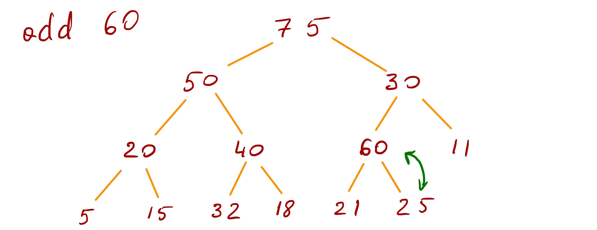
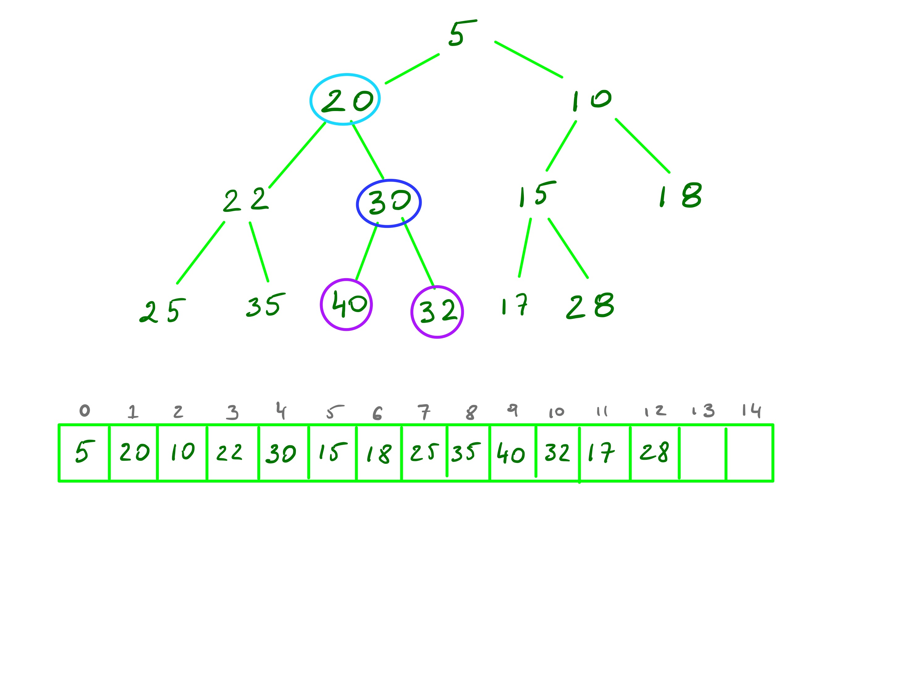

class: center, middle, title-slide # CSCI-UA 102 ## Data Structures <br> ## Priority Queues .author[ Instructor: Joanna Klukowska <br><br><br> ] .license[ Copyright 2020 Joanna Klukowska. Unless noted otherwise all content is released under a <br> [Creative Commons Attribution-ShareAlike 4.0 International License](https://creativecommons.org/licenses/by-sa/4.0/).<br> Background image by Stewart Weiss<br>] --- layout:true template: default name: section class: inverse, middle, center --- layout:true template: default name: breakout class: breakout, middle --- layout:true template:default name:slide class: slide .bottom-left[© Joanna Klukowska. CC-BY-SA.] --- template: slide ## When A Queue is Not Enough -- - __course registration__ (the seniors get to register sooner than the other students, in many schools athletes get priority registration, students from within other schools get to register later, etc. ) -- - __emergency room triage__ (a person with a heart attack should be taken care of before someone with a rash) -- - __boarding a plane__ (passengers get priority based on the type of seat that they booked and their status with a given airline) -- - __scheduling processes__ (computer programs) on a processor (all computer processes have some priority assigned to them and the ones with highest priority get the time on a processor first; the assignment of priorities for computer processes is a complicated and challenging problem - you'll see more about it in your operating systems course) -- - ... --- template: section # Priority Queues --- ## Priority Queue Interface - The interface for a priority queue is much like the one we had for a queue, but _where the elements go_ changes. -- - `enqueue( element )` adds the `element` to this queue - `dequeue()` removes and returns the element with highest priority - `front()` returns (but does not remove) the element with the highest priority -- <br/><br/> - Priorities are usually represented by numbers -- - _highest priority_ could be indicated by largest number or by smallest number (this often depends on the application and conventions used) --- name: pq-ideas template: slide ## How Can PQ Be Implemented Throughout the semester, we discussed several different structures that can be used for implementation of a priority queue. Below we review different options. -- - __unsorted array__ -- - `enqueue()` - operation can be implemented by adding to the end (assuming we leave empty locations at the end of the array), so it is amortized time O(1) -- - `dequeue` - operation needs to find an item with the highest priority, so it requires a linear search, O(N) -- - __sorted array__ -- - `enqueue()` - operation can use binary search to find the correct location for a new element, O(log N) time, but then other elements in the array need to be shifted to accommodate the new element - this makes it O(N) -- - `dequeue` - operation needs to remove the item with highest priority which is at the front of the list which requires only constant time O(1), unless we need to shift remaining elements, in which case it is O(N) -- - __unsorted linked list__ - exactly same performance of `enqueue()` and `dequeue()` as with unsorted array --- template: pq-ideas - __sorted linked list__ -- - `enqueue()` - operation can use linear search to find the correct location for the new element -- - `dequeue` - operation needs to remove the item with highest priority which is at the front of the list which requires only constant time O(1) -- - __balanced binary search tree (sorted by priorities__ -- - `enqueue()` - operation can use standard addition to a balanced BST, this is O(logN) -- - `dequeue` - operation needs to locate and remove the _smallest_ or _largest_ element, this is O(logN) -- Objectives - we want enqueue and dequeue operations to take approximately the same time - we want the time for these operations to be as small as possible -- The balanced binary search tree seems like a good choice, but do we need the total ordering of the elements that comes with it? --- template: section # Binary Heap ADT ## (Another Type of a Binary Tree) --- ## Binary Max-Heap <br/> .important[__Max-heap__ is a complete binary tree with a property that each node contains a value that is greater than or equal to the value of its children. ] <br/> -- A max-heap has to maintain two properties: - __shape property__ the heap has to be a complete binary tree (a complete binary tree is a binary tree in which every level, except possibly the last, is completely filled, and all nodes are as far left as possible), - __order property__ each node has a value greater than or equal to the values of both of its children. -- .center[ ] --- ## Binary Min-Heap .important[__Min-heap__ is a complete binary tree with a property that each node contains a value that is smaller than or equal to the value of its children. ] <br/> -- A min-heap has to maintain two properties: - __shape property__ the heap has to be a complete binary tree (a complete binary tree is a binary tree in which every level, except possibly the last, is completely filled, and all nodes are as far left as possible), - __order property__ each node has a value smaller than or equal to the values of both of its children. -- .center[ ] -- <br/> The difference between a max-heap and a min-heap comes in their order property. --- ## Min- and Max-heap Examples .center[ ] -- .center[ ] --- ## Adding to a Binary Max-Heap - The add operation is proportional to the height of the tree. Since the tree is a complete binary tree, its height is always O(logN). -- name: pq-add - During the __add__ operation, - __add the new node as the last element in the lowest level__ of the tree (this maintains the shape property , but it may violate the order property) - __heapify the tree__, by moving the new node up (swapping with the parent node) until its parent is greater than, or equal to it (this restores the order property) --- template: pq-add .center[ <img width="700px" alt="min-heap" src="img/13/pq-add-9.jpg"> ] --- template: pq-add .center[ ] --- template: pq-add .center[ ] --- template: pq-add .center[  ] --- template: pq-add .center[ ] --- template: pq-add .center[ ] --- template: pq-add .center[ ] --- template: pq-add .center[ ] --- template: pq-add .center[ ] --- template: pq-add .center[ ] --- template: pq-add .center[ <img width="700px" alt="min-heap" src="img/13/pq-add-19.jpg"> ] --- template: pq-add .center[ ] --- template: pq-add .center[ ] --- template: pq-add .center[ ] --- template: pq-add .center[ ] --- template: pq-add .center[ ] --- template: pq-add .center[ ] --- ## Removing from a Binary Max-Heap - The remove operation is proportional to the height of the tree as well. Since the tree is a complete binary tree, its height is always O(logN). -- name: pq-remove - During the __remove__ operation, - __remove and return the root__ of the tree (but that _leaves a hole_ in the tree - __take the rightmost node from the lowest level of the tree and move it to where the root was__ (this preserves the shape property, but we need to do some work to restore the order property) - __heapify the tree__ by moving the new root down, swapping with the larger of its children, until we find the position at which both of its children are smaller (this restores the order property) --- template: pq-remove .center[ ] --- template: pq-remove .center[ ] --- template: pq-remove .center[ ] --- template: pq-remove .center[ ] --- template: pq-remove .center[ ] --- template: pq-remove .center[ ] --- template: pq-remove .center[ ] --- template: pq-remove .center[ ] --- template: pq-remove .center[ ] --- template: pq-remove .center[ ] --- template: pq-remove .center[ ] --- template: pq-remove .center[ ] --- template: section # Implementing the Binary Heap ADT --- ## Implementation Concerns - In our binary trees we only kept references to children in the nodes. To move up and down the tree, we would need to have parent references as well. -- - How do we know where the _last position in the lowest level_ is? Moreover, how to we update that position as we add and remove from the heap? -- .center[.center80[ .important[Binary heaps are implemented using arrays, not using binary trees.] ]] --- name:pq-array ## Using Arrays to Implement Heaps .left-column2-smaller[.small[ - We can populate an array with values stored in nodes of a complete binary tree by reading them off from the root one level at a time (this is breadth first search traversal of a tree). ]] -- .right-column2-larger[ ] --- template:pq-array name: pq-array2 .below-column2[ ] .left-column2-smaller[.small[ - This gives us the following properties: - the root of a tree is at index 0 - if an element is not a root, its parent is at position $(index-1)/2$ - if an element has a left child, the child is at position $index\times2+1$ - if an element has a right child, the child is at position $index\times2+2$ ]] -- .right-column2-larger[  ] --- template: pq-array2 .right-column2-larger[ ] --- template:pq-array name: pq-array2 .below-column2[ ] .left-column2-smaller[.small[ - Alternatively, we can skip index zero and shift all the elements by 1 towards the end of the array: - the root of a tree is at index 1 - if an element is not a root, its parent is at position $index/2$ - if an element has a left child, the child is at position $index\times2$ - if an element has a right child, the child is at position $index\times2+1$ ]] -- template:pq-array .right-column2-larger[ ] -- .below-column2[ ] .small[ - This allows us to move from parent to child and child to parent very quickly (no need to worry about storing extra references) and the _last position at the lowest level_ is always the last element in that array. ] --- template: section # Priority Queues using Heaps --- ## Priority Queues using Heaps - Binary heaps are used for efficient implementation of priority queues. --- ## Java Libraries Implementation of a Priority Queue Java implements a heap based priority queue in the class PriorityQueue<E>, see https://docs.oracle.com/en/java/javase/11/docs/api/java.base/java/util/PriorityQueue.html for details. You should also take a look at the actual implementation of this class (this can be downloaded with the source code for JDK). The method names are slightly different than what we have been using. The enqueue operation is provided by add(E element) method and the dequeue operation is provided by poll() method. --- template: section # Heap Sort --- template: breakout ## Using binary heaps to sort Assume that you have data stored in a binary max-heap or a binary min-heap. Suggest an algorithm that uses the heap to produce a sorted collection. --- template:section # Examples and Things to Think About --- ## Adding and Removing - Start with an empty binary max-heap. - Show the heap after each of the following values is added: 25, 30, 45, 32, 11, 35, 50, 12, 5, 40, 30, 27, 4, 24 - Show the above heap after each of the top five values are removed. ----- - Repeat the above, but using a min-heap, not a max-heap. --- ## Heap or Not ? Determine if each of the arrays below represents a heap. If so, is it a min-heap or a max-heap? .smaller[Assume that values marked with ... are empty locations in the array representing the heap.] - [57, 23, 35, 17, 20, 10, 25, 8, 15, 5, 19, 17, 8, ..., ..., ..., ..., ..., ...] - [25, 68, 30, 70, 86, 45, 32, 80, 75, 90, 100, 50, 47, 35, ..., ..., ..., ..., ..., ...] - [98, 55, 34, 49, 23, 20, 15, 45, 40, 5, 10, 2, 7, 4, ..., ..., ..., ..., ..., ...] - [12, 43, 35, 44, 56, 65, 53, 50, 67, 89, 72, 78, 90, 88, ..., ..., ..., ..., ..., ...] --- ## Heap Stats - Given a binary min-heap with 4 levels, - what is the smallest number of values stored in this heap? - what is the largest number of values stored in this heap? - Given a binary min-heap with 18 values, what is the range of indexes in its array representation that hold - the smallest value in the min-heap? - the largest value in the min-heap? (assume that the root is stored at index 0). --- ## Finding Median Given a set of values, suggest an algorithm for finding a median of these values. Your algorithm should use a min- or a max-heap. </optgroup>